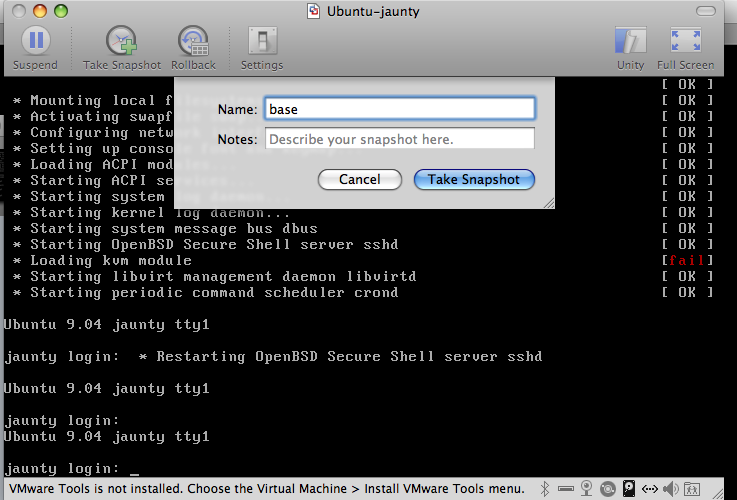

VMware (Fusion) and PoolParty setup
PoolParty supports VMware as a remoter base. This allows one to test clouds.rb files without the cost of booting and shutting down cloud instances. Currently, this has only been tested on Mac OSX with VMware Fusion. In theory, it should work on any machine with the vmrun binary installed.
-
Download VMware Fusion
-
Download the Ubuntu VMware image Make sure you can already boot it up and you have internet connectivity
-
You must be able to access the image when the instance boots up. Therefore you need to install your public key and take a snapshot of the image.
Add your public key to the list of authorized keys on the root user on the image
For example:
1 scp ~/.ssh/id_rsa.pub root@local_vmware_ip:/root/.ssh/authorized_keys
Then take a snapshot I call my snapshot base

A list of snapshots -
Make sure vmrun is in your PATH
For example, using VMware Fusion on Mac OSX add the following to your .profile
1 export PATH=$PATH:/Library/Application Support/VMware Fusion
-
enable vmrun in your clouds.rb
todo: inline block below is ugly
1 using :vmrun do 2 vmx_hash({ 3 "/Users/alerner/Documents/Virtual Machines.localized/one.vmwarevm/Ubuntu Linux 32bit.vmx" => "192.168.248.128" 4 }) 5 end
-
cloud-start